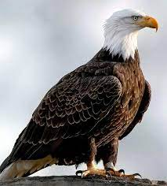

Eagle

Summary
As a majestic wild eagle, my purpose is to grace the skies with my
awe-inspiring flight and play a vital role in maintaining the delicate
balance of the natural world. With a keen eye and a strong sense of duty,
I soar through the heavens, vigilant and steadfast in safeguarding my
territory. Guided by an innate connection to the rhythms of nature, I am
committed to ensuring the well-being of my fellow creatures and
contributing
to the harmony of the wilderness. My goal is to inspire awe and admiration
in all who witness my soaring silhouette against the backdrop of the
boundless sky.
Education
-
Self-Taught Avian Mastery
Skies University
Self-Paced Learning
-
Flight Dynamics and Soaring Techniques
Nature's Flight Academy
Completion: June 2022
Work experience
-
Sky Patrol Officer
Cloud Guardians Agency
June 2022 - Present
Responsibilities:
-
Maintain aerial surveillance of territory to ensure the safety and
security of the skies.
-
Collaborate with fellow avian officers to track and report any
unusual activities.
- Conduct rescue missions for injured birds and other wildlife.
-
Nest Protector
Wilderness Conservation Society
March 2021 - May 2022
Responsibilities:
-
Guarded and defended nesting sites against potential threats,
ensuring the survival of future generations.
-
Assisted in the rehabilitation and release of injured birds back
into their natural habitat.
-
Educated human visitors about the importance of preserving natural
habitats.
Skills
-
Proficient in mastering various wind currents and thermal updrafts.
- Exceptional visual acuity and keen observation skills.
- Agile maneuvering and precise control during flight.
-
Strong understanding of local weather patterns for optimal navigation.
Awards and Achievements:
-
High-Flyer Award for Exemplary Sky Patrol Service
Cloud Guardians Agency
August 2023
-
Conservation Hero Recognition
Wilderness Conservation Society
April 2022
Hobbies
Contact